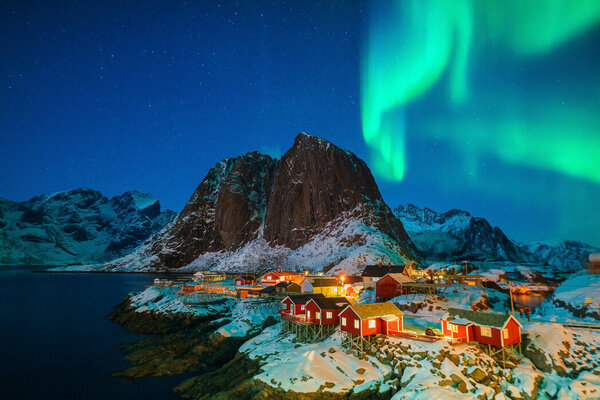

🧭 Lugares turísticos más importantes:
Los países nórdicos ofrecen una gran variedad de destinos que combinan naturaleza, historia y cultura
- Laponia (en Finlandia, Suecia y Noruega): Ideal para ver auroras boreales, conocer al "auténtico" Papá Noel y disfrutar de paisajes nevados únicos. Actividades como safaris en moto de nieve, trineos con huskies o visitar aldeas sami son muy populares.
- Copenhague (Dinamarca): Ciudad vibrante con encanto escandinavo, famosa por la Sirenita, los jardines de Tivoli, Nyhavn y el barrio de Christiania.
- Estocolmo (Suecia): Elegante y rodeada de agua, con su casco antiguo (Gamla Stan), el museo Vasa y el moderno museo ABBA.
- Reikiavik (Islandia) y sus alrededores: Desde aquí se accede a maravillas naturales como la Laguna Azul, el Círculo Dorado, cascadas como Gullfoss y volcanes como el Hekla.
- Fiordos noruegos: Geirangerfjord y Nærøyfjord son Patrimonio de la Humanidad, ideales para excursiones en barco o senderismo.
🚗✈️ Cómo viajar entre los países nórdicos:
Viajar entre estos países es sencillo, ya que todos forman parte del Espacio Schengen, lo que permite moverse sin controles fronterizos.
- Avión: Hay vuelos frecuentes y rápidos entre las capitales.
- Tren: Hay buenas conexiones entre Suecia, Noruega y Dinamarca.
- Autobús: Opción económica para distancias más largas.
- Barco/ferry: Muy común para moverse entre costas e islas, especialmente entre Finlandia, Suecia y Estonia.
- Coche: Las carreteras están en muy buen estado, aunque en invierno puede ser necesario usar neumáticos especiales.
🧳 Recomendaciones para turistas:
- Ropa: Llevar ropa térmica o de capas, incluso en verano, especialmente si se viaja al norte. En invierno, es imprescindible abrigo grueso, guantes, gorro y calzado impermeable.
- Ropa: El transporte público es muy eficiente. Muchas ciudades ofrecen tarjetas turísticas con acceso a museos y transporte ilimitado.
📅 Mejor época para visitar:
- Verano (junio–agosto): Días largos, temperaturas agradables y la experiencia del sol de medianoche en el norte.
- Invierno (noviembre–marzo): Ideal para ver auroras boreales, practicar deportes de invierno o vivir una auténtica Navidad nórdica.
- Invierno (noviembre–marzo): Menos turismo, precios más bajos y paisajes muy fotogénicos.
📬 Formulario de contecto para mas información:
¿Te interesa saber más sobre los países nórdicos? ¿Tienes dudas o quieres recibir una guía personalizada? ¡Contáctanos!
